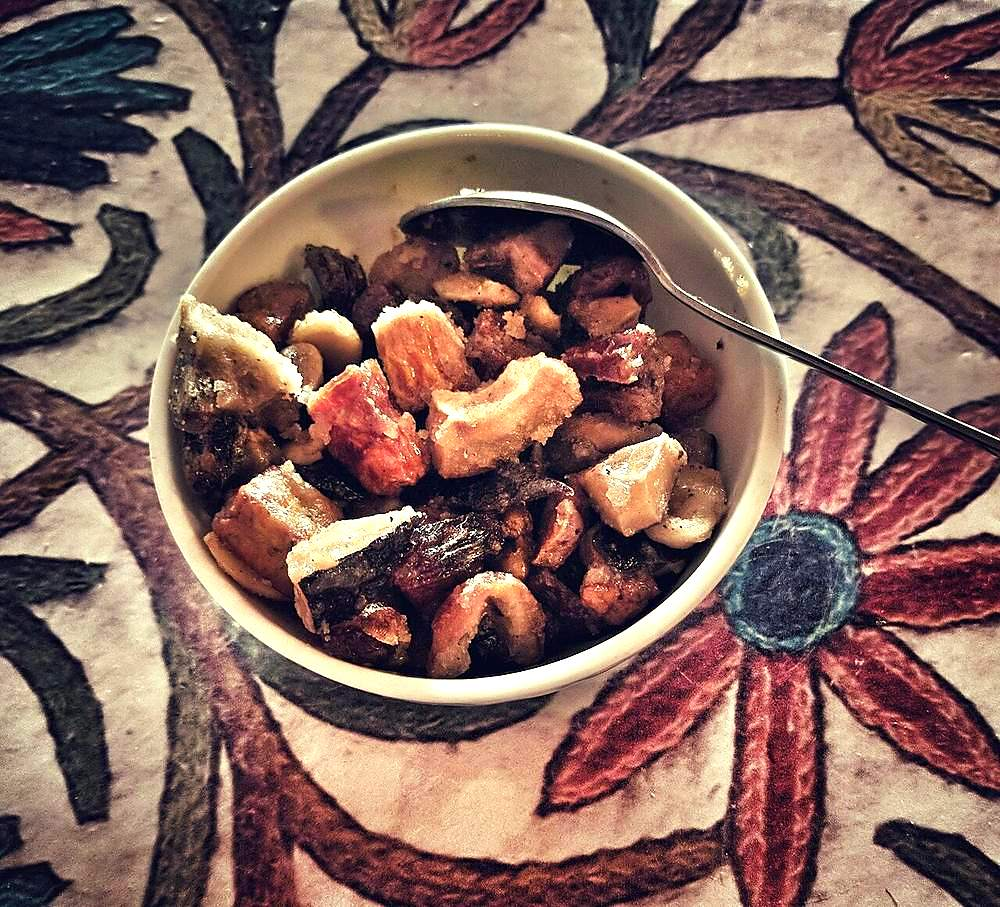

Contains: milk, tree nuts
Checked against the ingredient list for ten allergens: milk, egg, fish, crustaceans, tree nuts, peanuts, sesame, mustard, soy and gluten. Brands vary, so read the label on anything new to you.
Ingredients
Quantities for 6.
- 250g, cut into 1cm cubes Paneer
- 5 tbsp Ghee
- 50g, halved lengthways Almonds
- 50g, whole Cashew
- 50g, broken into large pieces Walnuts
- 30g Pistachiosoptional
- 50g Raisins
- 60g, quartered Dried Apricot
- 60g, pitted and chopped Datesoptional
- 200g Sugar
- 200ml Water
- 8 pods, seeds crushed Cardamom
- 1 stick, 3cm Cinnamonoptional
- 1/2 tsp, coarsely cracked Black Pepperthe prickle that makes shufta shufta
- 1/2 tsp Dry Ginger Powderoptional
- a generous pinch Saffron
- 2 tbsp, warm Milkfor steeping the saffron
- 1 tsp Kewra Wateroptional
Cookware
stovetop, kadhai
Before you start
- Soak the saffron in the warm milk for 20 minutes until the liquid is deep orange.
- Soak the almonds, cashews and apricots in hot water for 15 minutes, then drain and pat dry. They plump up and stop tasting dusty.
- Have everything chopped and lined up; once the syrup is made the dish comes together in five minutes.
Method
- Heat 3 tbsp of the ghee in a kadhai over medium heat and fry the paneer cubes until pale gold on all sides, about 4 minutes.Keep them moving. Paneer sticks the moment it sits still in ghee.
- Lift the paneer out and drop it straight into a bowl of warm water for 5 minutes, then drain.The warm-water soak is what keeps fried paneer soft instead of squeaky.
- Add the remaining ghee to the pan and fry the almonds and cashews until they turn a shade darker, about 2 minutes.
- Add the walnuts, pistachios, apricots and dates and toss for 1 minute, then add the raisins and take the pan off the heat as they swell.Raisins burn faster than anything else in the pan. They need seconds, not minutes.
- In a separate pan, dissolve the sugar in the water and boil for 6 to 7 minutes to a syrup of one-thread consistency. A drop between finger and thumb should pull a single short thread.
- Stir the crushed cardamom, cinnamon, cracked black pepper and dry ginger powder into the syrup and simmer 2 minutes.The pepper should be coarse enough to bite on. Ground pepper just makes the syrup muddy.
- Pour the spiced syrup over the fruit and nuts, return to low heat and simmer 4 minutes until the syrup clings.
- Fold in the drained paneer and the saffron milk and cook 2 minutes more, turning gently.
- Take off the heat, stir in the kewra water and rest 10 minutes.
- Serve warm, in small bowls. It is very rich.
Storage
Keeps 5 days refrigerated in an airtight box. Reheat a portion in a pan over low heat with 1 tbsp water for 3 minutes; it is also good cold, straight from the fridge.
Nutrition Low estimate
Medium protein: 14 g a serving, 9% of the calories
| Per serving150 g | Per 100 g | |
|---|---|---|
| Calories | 605 kcal | 405 kcal |
| Protein | 14.1 g | 10 g |
| Carbohydrate | 62.4 g | 42 g |
| of which sugars | 53.4 g | 36 g |
| Fibre | 4.2 g | 3 g |
| Fat | 36.3 g | 24 g |
| of which saturated | 13.9 g | 9 g |
| of which unsaturated | 19.3 g | 13 g |
Syrup left in the bowl, or batter that yields more than the stated servings, means the real figures are likely lower. Estimated from raw ingredients using USDA FoodData Central.
Times, yields, allergens and nutrition are guidance. Use your own judgement on doneness and on storing. More in About.